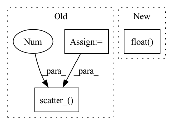

Pattern ID :14452

Before Change
target_logit > self.th, cos_theta_m, target_logit - self.mm
)
if cfg["USE_AMP"] == True and cfg["OPT_LEVEL"] == "O1":
final_target_logit = final_target_logit.half()
cos_theta.scatter_(1, label.view(-1, 1).long(), final_target_logit)
output = cos_theta * self.s
return output
After Change
is_half = cos_theta.dtype == torch.float16
cos_theta_m = torch.where(
cos_theta > self.min_cos_theta, cos_theta_m, cos_theta.float() - self.m_am,
)
if is_half:
cos_theta_m = cos_theta_m.half()
In pattern: SUPERPATTERN
Frequency: 3
Non-data size: 3
Instances
Fragment ID: 47522892
Project Name: cavalleria/cavaface
Commit Name: 98a21048f5dce435a6639a288dafc4c6be61be05
Time: 2021-08-25
Author: 605370459@qq.com
File Name: head/metrics.py
M Class Name: ArcFace
N Class Name: ArcFace
M Method Name: forward(3)
N Method Name: forward(3)
M Parent Class: nn.Module
N Parent Class: nn.Module
M File Name: head/metrics.py
N File Name: head/metrics.py
M Start Line: 81
M End Line: 103
N Start Line: 67
N End Line: 86
'>
Before Change
// comptute hard codevector distribution (one hot)
codevector_idx = hidden_states.argmax(dim=-1)
update_values = torch.ones_like(codevector_idx.view(-1, 1), dtype=hidden_states.dtype)
codevector_probs = hidden_states.new_zeros(*hidden_states.shape).scatter_(
-1, codevector_idx.view(-1, 1), update_values
)
codevector_probs = codevector_probs.view(batch_size * sequence_length, self.num_groups, -1)
perplexity = self._compute_perplexity(codevector_probs, mask_time_indices)
After Change
hard_probs = torch.nn.functional.one_hot(codevector_idx.long(), num_classes=self.num_vars).view(
batch_size * sequence_length, self.num_groups, -1
)
code_perplexity = self._compute_perplexity(hard_probs.float(), mask_time_indices)
soft_probs = torch.softmax(
hidden_states.view(batch_size * sequence_length, self.num_groups, -1).float(),
'>
Fragment ID: 47522894
Project Name: huggingface/optimum-graphcore
Commit Name: 2ec4ed72ea362414d20c9b112072f3aa7b3d399a
Time: 2022-07-29
Author: 91201457+thorinf@users.noreply.github.com
File Name: optimum/graphcore/models/wav2vec2/ipu_gumbel_vector_quantizer.py
M Class Name: IPUWav2Vec2GumbelVectorQuantizer
N Class Name: IPUWav2Vec2GumbelVectorQuantizer
M Method Name: forward(4)
N Method Name: forward(4)
M Parent Class: Wav2Vec2GumbelVectorQuantizer
N Parent Class: Wav2Vec2GumbelVectorQuantizer
M File Name: optimum/graphcore/models/wav2vec2/ipu_gumbel_vector_quantizer.py
N File Name: optimum/graphcore/models/wav2vec2/ipu_gumbel_vector_quantizer.py
M Start Line: 68
M End Line: 102
N Start Line: 80
N End Line: 110
'>
Before Change
) -> torch.Tensor:
Add smoothness in labels.
target = torch.max(target, dim=1)[1]
confidence = 1 - self.label_smoothing
smooth_target = torch.zeros_like(pred).to(self.device)
smooth_target.fill_(self.label_smoothing / (self.num_classes - 1))
smooth_target.scatter_(1, target.data.unsqueeze(1), confidence)
return smooth_target
def get_criterion(
After Change
def add_label_smoothing(self, target: torch.Tensor) -> torch.Tensor:
Add smoothness in labels.
nonzero_idxs = target != 0.0
nonzero_cnt = nonzero_idxs.sum(dim=1, keepdim=True).float()
target *= 1 - self.label_smoothing
smooth_target = torch.ones_like(target).to(self.device)
smooth_target *= self.label_smoothing / (self.num_classes - nonzero_cnt)
'>
Fragment ID: 47522888
Project Name: j-marple-dev/model_compression
Commit Name: e26c887b77435b7eb063b2a43b3a92f0ddf45d58
Time: 2020-07-19
Author: jwpark@jmarple.ai
File Name: src/criterions.py
M Class Name: CrossEntropy
N Class Name: CrossEntropy
M Method Name: add_label_smoothing(2)
N Method Name: add_label_smoothing(3)
M Parent Class: Criterion
N Parent Class: Criterion
M File Name: src/criterions.py
N File Name: src/criterions.py
M Start Line: 195
M End Line: 202
N Start Line: 196
N End Line: 202